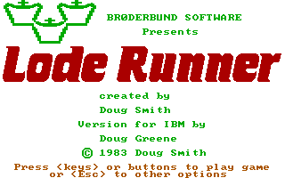
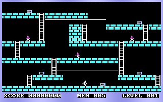

名稱：超級運動員／超級挖金員／淘金者／挖金塊／偷金子 (Lode Runner，英文版) 簡介：Broderbund 1983年出品的動作遊戲，1987年移植至DOS [待補]。   保護：磁片，破解碼： LR.COM (3.0版) AA 50 E8 52 5B -- -- 90 90 90 7F 03 E9 92 90 90 -- -- 備註：電腦速度不可太快，否則不易操控。DosBox建議cycles在500左右。

